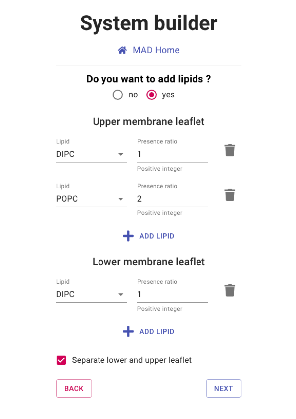
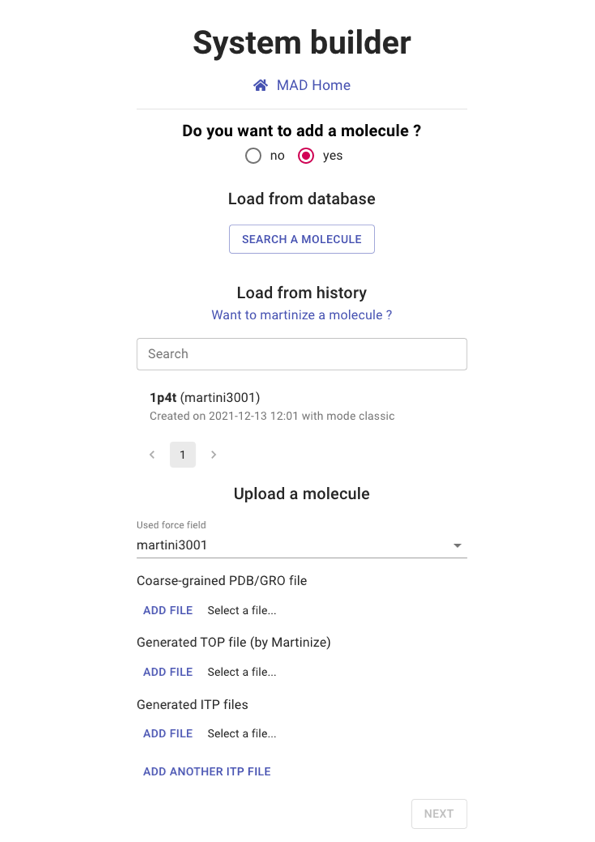
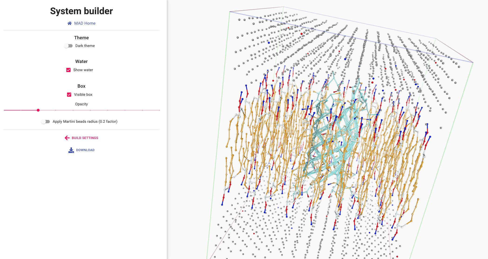
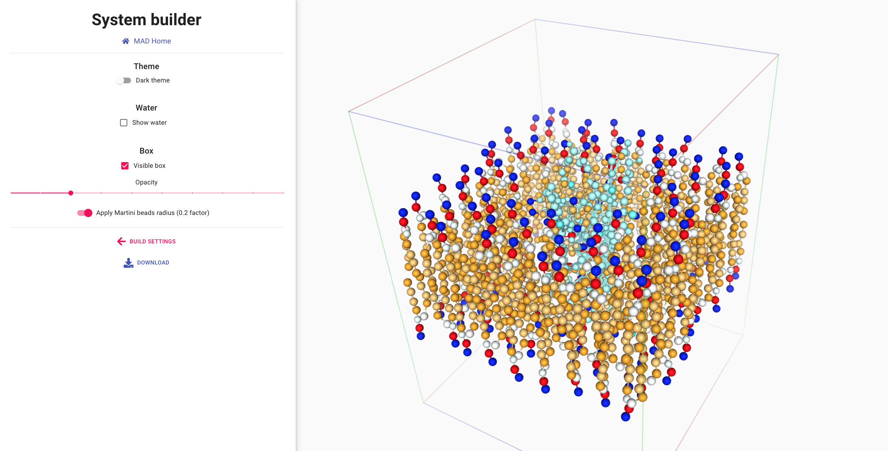

- Database of molecules: these are all the public molecules currently stored on the MAD server.
- History: these are your private molecules that you previously processed in the molecule builder.
- Upload: the advanced user can upload the required set coordinates, topology and itp files for a molecule from their hard drive.
System Builder
The system builder tool offered by MAD is a tool that bridges the gap
between the INSANE sofware[1]
and different collection of molecules.
The INSANE software generates initial coordinates for a large system of atoms.
INSANE is a powerful tool for the generation of phospholipid bilayers with
optional embedded protein.
The user will be able to choose the size and composition of the bilayer and other general properties of the system.
The MAD:System Builder provides default setup parameters, but these can largely be
overridden if a user needs to.
The computation of the system will be performed on our cluster and an email can be sent to the user upon completion.
The following topics will be covered in order to guide you through your first use of the MAD:System Builder.
1. Adding molecules to the bilayer
2. Setting up the bilayer
3. INSANE program settings
4. Visualizing and using the system
person_add
Because the service makes use of our computational resources, it is required for you to sign
in order to have access to the MAD:System Builder
Adding molecules
By default, no molecule is selected at the startup. You can choose the molecule to be inserted in the membrane
from three kinds of sources:
info_outline
If the user does not add a molecule, a simple bilayer will be generated. In that case, the user will be
prompted to choose a force field version. Otherwise, the force field version is automatically inferred from
the chosen/uploaded molecule.
launch
Please select the 1pt4 from your history and proceed to NEXT section.

Setting the bilayer compostion
By default, you must select at least one type of lipids and the lower and upper leaflets have identical
composition.
You can modify the lipid bilayer composition or even remove it entirely with the following options:
- Toggle the addition of lipids: If set to no the system will be a box of water with no lipid bilayer.
- Add Lipid: Select the different phospholipds to be added to the bilayer composition. Individual type and ratio can be set.
- Separate lower and upper leaflet: set up common or separated lipid compositions for the two leaflets.
launch
Please select a separate lipid composition of 1 DIPC and 1 DLPC for the upper and lower leaflets
respectively.
Then proceed to NEXT section.

INSANE program settings
Here you can modify the execution parameters of the INSANE software. Default parameters are preselected
to ensure a safe generation of the system coordinates.
Still, many options are available should you require additional setup conditions.
warning
Extreme values for some parameters may cause the INSANE software to early exit out of errors.
In such cases, MAD will warn you and you will be able to
retry with other parameter values.
- Periodic boundary conditions: Set the geometry and dimensions of the simulation box.
- Lipid options: Define the membrane lipid spacing for the molecules distribution across the bilayer.
- Protein options: Place the protein at the bilayer center, eventually orienting it.
- Water, salt and solvent options: Define system total charge, salt concentration and solvent type.
lock_open
For experienced INSANE users, specific options are available through the ADVANCE SETTINGS panel.
These options won't be covered in this tutorial as they required advanced knowledge of the INSANE program.
launch
You can leave all values to default and proceed to CREATE SYSTEM

Visualizing and using the system
The viewer section of the MAD:System Builder allows for a final visual
inspection of the system.
The molecular structures of the molecules are displayed in the leaflets and the surrounding water.
Water molecules can be shown,
with proper coloring for the charged ions (bottom left).
Membrane lipids and the embeded protein are displayed in ball and sitck representation (lower right).
A size reduction is applied to the actual Martini3 beads to avoid the cluttering of representation.


launch
Retrieve you molecular dynamic input files in itp, pdb and gro formats
with the DOWNLOAD link
References
- Wassenaar T.A., Ingólfsson H.I., Böckmann R.A. et al.Computational Lipidomics with insane: A Versatile Tool for Generating Custom Membranes for Molecular Simulations. J. Chem Theory Comput (2015) 11, 2144-2155. doi : 10.1021/acs.jctc.5b00209